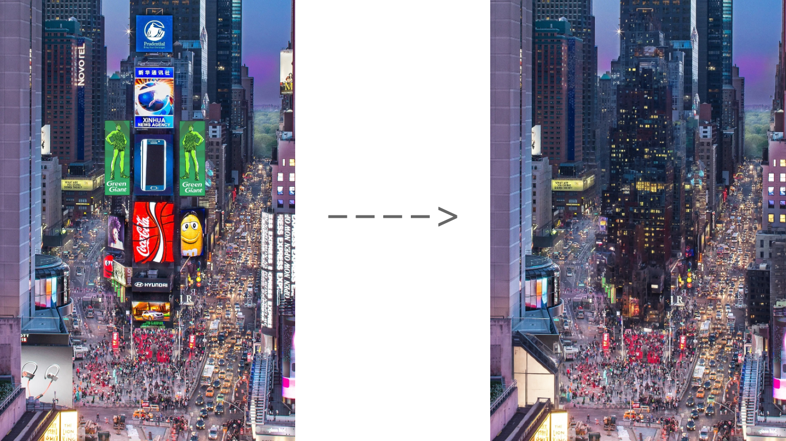

Ad-blocker smart glasses
For a while I was really worried ads would overrun the world. NYC and Tokyo would be awful for me with all the flashing screens on every surface. Maybe they aren't so bad now, but thinking about the future, I could imagine things getting much more pervasive. But luckily we have AI.
It is only a matter of time before we have ad blocker smart glasses. These will recognize unwanted ads or logos or whatever you don't want to see, and replace these areas of your vision. Maybe in the beginning it will just blur or paste an image of your choice over the area. But eventually it will probably fill the area with something more natural – AI can already do this just not in real time. Our perception might look something like this, which was done with AI in one take.

I'm looking forward to the day these become real. I like my world real quiet. Less noise makes me feel like I can pay more attention to now vs my senses being mined for $$$.
2023-11-14